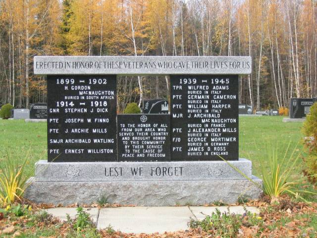

The Family Chronicle
No. 147 December 9, 2007
____________________________________________________________________

I am drafting this newsletter on November 11. It seems appropriate,
therefore, to include a photo of this memorial at the Black River Cemetery
Southernwood
In preparation for winter, I was doing some yard work including cutting back my southernwood at the corner of the house. It reminded me of a similar bush in front of my home at Little Branch.
A small southernwood plant grew by the walk close to the front door and many people admired it as they walked past. A particular admirer was Alex Newton. He usually bent over, picked a few leaves and crushed them in his hand each time he passed. He loved the smell of southernwood - as do I.
Mystery Church
While in Black River recently, I met informally with a number of people interested in Black River genealogy. During the conversation, mention was made of a Baptist church in Black River. The date is unknown but Ernie MacLean believes it stood on the present site of St. Paul’s Presbyterian Church. Ken Glendenning was aware of it but thought that it was on a site directly across the road from St. Paul’s Church.
Furthermore, it was Ernie’s recollection that the land was given for the Baptist Church by a MacDonald. While I have not checked land transfer records, it is my understanding that the land for St. Paul’s Presbyterian Church was given by Jack Gibson
On occasion, I’ve heard the story that there were graves in the wooded area just behind the Presbyterian Church; I am told that a number of people have gone looking but so far no graves were found.
Once or twice removed.
While in Canobie recently I had a conversation with Danny Glendenning, a first cousin once removed – during which the meaning of “removed” arose. Here is my understanding.
Danny’s father, George, and I are first cousins because our fathers were brothers. Danny is my first cousin once removed; Danny and my son, Brian, would be second cousins. Danny’s children and Brian’s children would be third cousins. And so it goes.
Uncle Harry Glendenning often said that we were 49th cousins – that would be well down the line.
From Art Mills
Art Mills sent a note recently in which he mentioned Clifford Adams. Art said:
… Cliff (Adams) was our School Bus driver, he was the most patient man I have encountered. The noise some days on the Bus was un-believable, and Cliff would not only tolerate but would seem to enjoy it as long as he was included in the joke, or included in whatever was going on. One day my poor mother was horrified to answer the door and find Cliff standing there,” Is Arthur not going to school today” I was of course reading a sports book not a school book, the latter might have avoided a strong lecture.
Chatham Gazette
The following comes from the Chatham Gazette of July 8, 1932:
In 1930 the Dominion Department of Agriculture through its Experimental Station work, established an Illustration Farm at Walter Cameron’s, Black River Bridge. Twelve acres of land were taken over and efforts were made to show by crop rotations, judicious use of fertilizer and good workmanship, how to improve the fertility and productiveness of the soil. The work was carried on under supervision of T. G. Hetherington.
The Family Chronicle (Copyright) is an occasional newsletter published by Don Glendenning and posted on the family website. It is intended to share information about my family, community and the times in which I grew up. While every effort is made to be accurate, errors are likely to occur. Comments, enquiries and information may be sent to 62 Queen Elizabeth Drive, Charlottetown, PEI, C1A 3A9. Tel: 902 892 5859. Email: don@glendenning.net Web: www.glendenning.net/don